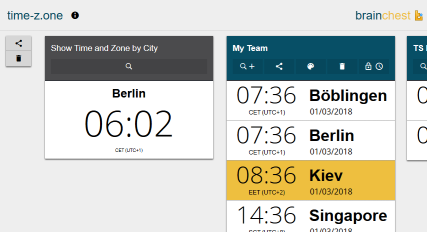

time-z.one
#timezone #schedule_planner #time_difference #meeting_planner
time-z.one is a simple app for comparing current times in different timezones. It has also the possibility to schedule meetings that take place in multiple timezones. Either way, you can share the result with colleagues, partners and friends. The database contains more than 145000 cities to search the current time for.
Time Stamp
#timestamp #timetracker #worktime
Time Stamp is the #1 work time tracker in the Windows Phone Store. It is simple, yet feature rich and loved by many customers with an overall rating of >4.5 stars. It is currently in development for any other major platform.